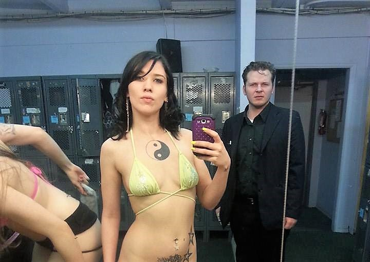

- How to Steal a Million.
- Breakfast at Tiffany's.
- StarWars.
- The Princess Bride.
- The Pianist.
- Serenity.
- Grandma's Boy.
- SuperTroopers.
- On the Waterfront.
- What Dreams May Come.
My Bio
Hello my name is Judah Hunger. After High School I didn't know what i wanted to do so, I join the Marines. I was in the Crop from 2004 till 2008. While in the Marines I was stationed with 2nd battlion 1st Marines, Fox companys 2nd platoon. After the military I still really didn't know what I wanted to do so I started working with scurity jobs. Those jobs were fine just not much to them. One of my Friends that I knew from the military was working at some club, he asked if I wanted to work with him again and help him be the best. I said yes and a year later I was a Manager. I moved to Colorado Springs, Spokane, and back to Seattle while working as a Manager. After being a Manager for about 7ish years I decided that I need to find something I want to do for myself. So that's when I researched coding and decided that's what I wanted to do.
In the Marines I've been to a lot of different counties, and experianced culture from around the world. As most enlisted I started at the bottom and had to work my way up. As a Team Leader I was in charge of any troops under my command. Dealing with any type of problem from basic needs like sleep, food, and basic living accommodations. Also I delt with problems to basic workflow and stratagy to accomplish any mission. When I became a Section Leader I also had to give commands/orders to Team Leaders that were clear so little to no room for error. While I was a Section Leader I delt with many obsticals and had to do a lot of conflict resolutions. Thanks to having proved myself in early deployments I had backing from my 1StSgt and Gunny as well as other high enlisted NCO's to help resolve any conflicts that arose.
the military I knew I didn't want to be a: Cop, Security Guard, Boarder Patrol. So not knowing what to do, I worked as an account manager for a security company in Seattle. Then after a year I quit to find something else. I started working for an armored car company, when a friend that was from my unit asked if I wanted to help with a club he was the General Manager at. I said yes.
As a Manager for the Clubs I did have a lot of fun and learned so much about running a buisness. Begining as Day Manager I was in charge of orders and making a par list of what we need. With making the list I also had to estimate how holidays and events would effect our club. I would also have to tain new employees and re-trian employees as needed to meet the club standards. Working with a management team and in reguards to daily operations, we created an environment so our customers and independant contracters would have the best experiance as possible. As I moved to Relief Manager, I had to problem solve and create new aproches to the same problems I experianced as Day Manager. I also had more interaction with back of house matters such as profit margins and scheduling. As General Manager I worked with my management team and created a professional environment for our staff and customers. Also I was incharge of everything that was related to my club.
